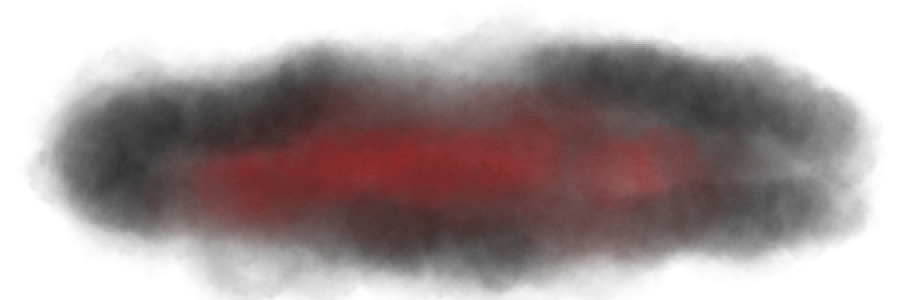

Logs of Lucifer
Log 1: Fifth full moon of the year, year 633. Vanth, my beloved wife, suggests that I document my findings, my experiments, and my thoughts before, during and after my experiments. I already complete a similar task in my normal journals, but she insists that I would have more to say here. She states if I do this, it shall be simpler for me to look back and recall what could have gone wrong if I were to fail my experiments. Also, it would be such a pleasure for my heir to look through my journals and books for when they come to age. How I would desire them to continue the family tradition and continue my work when I am unable to. I know one day my time will come. Age will not take me out, but instead, my citizens... My elder brother or perhaps his wife. His children maybe if he ever decides to plan one. He best hide them from me while they rest in Aurora's womb. I promised my brother I would never lay a hoof upon his wife and I stay true to my vows. Instead, I know that Vanth will have different opinions. She wouldn't rest until she corrupts the Queen's womb. She fears no one, and everyone fears her. Her bloodthirst rivals my own and I couldn’t be more proud of her. She even offered herself as a test subject for when she passes on. Unlike myself, time will take my most beloved, and yes, maybe I will grief over the loss... Maybe. Maybe, I will find a way to preserve her, keep her beside me... But the thought of cutting her open and replacing her insides with all sorts of organs from separate entities! It thrills me! I cannot express the joy that crosses my mind when I picture her body on the metal table, fur flawless ready to be ruined by her crimson essences. I could hardly wait for that day to come. My brother, Universum, doesn’t yet know of the experiments I have begun many moons ago, but each time I discuss my discoveries with Universum. He pays no mind to them, cares not about my discoveries, and even worse, congratulates me... congratulates me for slaughter. For my inner insanity and desire to mutilate and corrupt the souls of the innocent. Dearest brother, you shouldn’t be proud of my twisted accomplishments. They only make me want to hurt more.

Log 13: A Draconequues, perhaps the most difficult to understand being of the cosmos. With the body of all assorted creatures, their existence is partially why I began my experiments. Namely Subjects 2D-MX and D3-AD. But no matter what I do, no matter how many animals I have sacrificed to make my children... I cannot make one!! My test subjects almost never live past insession and if I manage to connect the nerves and tissue together, they never live past an hour. Even with my magic… It’s incredible that I, a King with powers beyond the universe cannot create something I was destined to do… I was meant to bring life to wastelands. I was meant to be great… I need to make my parents pleased… make them proud. Smile down upon me from the dark matter and stars they have become. Mother always told me to never give up on hope… I must always have hope. Always. Have. Hope… Hope… I constantly look over my captures and study their nervous system, their skeletal system, their digestive system, everything! The griffons and reptiles... the manticores and dragons... Failures. The brain can stimulate waves up to twelve minutes after death, afterwards, there is no chance to recharge the neurons... At first, I saw that removing the brain and brain stem from the skull would be best, but I overestimated my abilities to dissect and operate. Twelve minutes. I'm not fast enough… but why would I be? Afterall, operating and removing vital organs and tissue is an art, not just a guilty pleasure. Overtime, I discovered that decapitation is the quickest way to remove a head and attach it to the body. I thought I always worked fast... Not fast enough, this is inefficient! These experiments are not right!
Log 16: My eldest companion, Mr. Ichabod Inanis Daemonium has helped me a great deal with, possibly, my greatest creation yet. I can never thank him enough for the sacrifice he had made for me. The ultimate sacrifice… I have been able to create a being in which it can help instead of hinder those who come across it. Mr. Daemonium will forever greet new ponies with a smile and welcoming claw. Although sharp and intimidating, his personality has now become calm and gentle. Perfect for greeting children. Perfect for protecting those who had befriended him. Perfect for his host. If Vanth and I ever decide to conceive, then perhaps I would assign Mr. Daemonium to protect them. Afterall, there are many monsters who cannot be seen, yet are there to harm. Mr. Daemonium has become invisible to the average bystander, and can only be seen by the one he protects, the one he shares a bond with and in most cases, it is someone I am accustomed to, for you see, only a handful of equines know of my projects… What better way to serve your purpose than to defend those who had been working beside you? For now, I keep hin trapped in a crystal that rests in my regal chestplate. I would have him watch over my most beloved Vanth, but I fear what he might see. I fear what dreams he will implant in her mind while she slumbers. I cannot have him interrupt her soft singing while she rests… Of course, Mr. Daemonium no longer has memory of what he once was or what he is now… It feels wrong to name him anything else though.